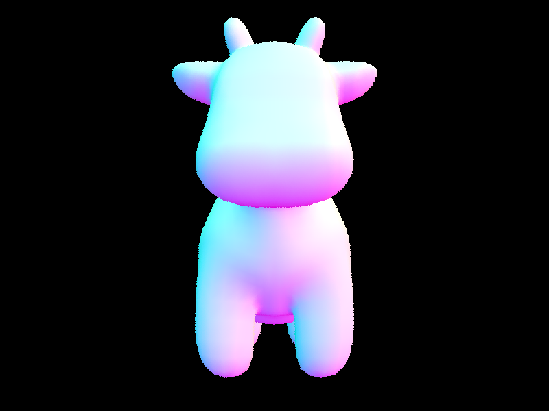
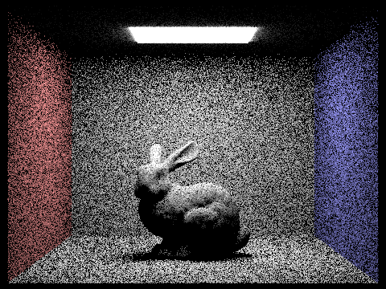
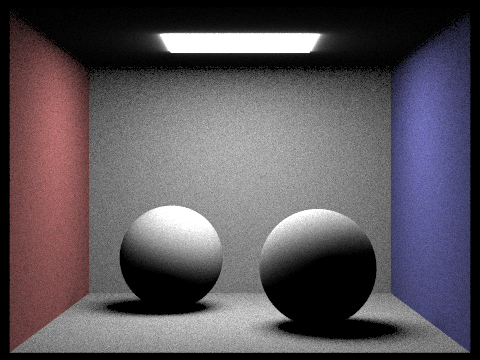
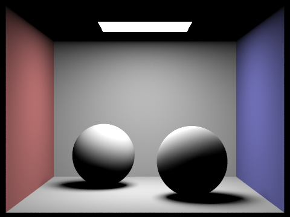
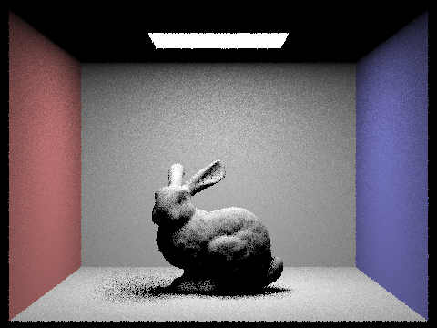

Overview
In this project, we have implemented a path tracing algorithm with global illumination. To do this, we first need a ray generating algorithm that samples from each pixel. In each pixel we sample a ray that is converted from an image space and ultimately to world space where we test for intersections. Intersections are efficiently checked through the use of the box volume hierarchy tree data structure, more specifically we check for box intersections and then we check for primitives. The primitives implemented are triangle intersections which are implemented through the moller-trumbore algorithm and the discriminant test of quadratic equation for sphere, respectively. For each valid intersection, we calculate the illuminance of the intersection. Then we handled direct sampling in two methods: uniform hemisphere sampling and light sampling, the latter of which aims to reduce the problem of noise in the former. Then, we have handled indirect sampling which serves the basis of global illumination. Lastly, to minimize the number of samples per pixel for convergence, we use adaptive sampling by checking if the average illuminance is within the 95% confidence interval, then the pixel has converged. This method drastically improves the performance of the path tracing algorithm.
Part 1: Ray Generation and Scene Intersection
Ray Generation
We are given the normalized (x,y) coordinates in image space that we want to render and that we want to generate a ray that goes from the image space to camera space and lastly to the world space where later we find intersections and get some form of RGB values. Transforming an image to camera is dependent on the tangent of height and width of the field of view. This is denoted with respect to tan(hFov / 2) * (2*x - 1) and tan(vFov / 2) * (2*y - 1) for x and y in camera space coordinates respectively. We determined this by ensuring that the center (0.5, 0.5) in image space corresponds to (0,0) in camera space. Then, the point has a z-value of -1 because that is where the sensor resides. Transform the point in camera space to world coordinates by multiplying the point by the camera-to-world matrix built-in in Camera. Then we normalize the point. Lastly construct the ray by having the origin be the point of the camera in the direction of the constructed point and have it be clipped by fclip and nclip.
Ray Tracing Pixels
To ray trace a pixel, we are given a pixel coordinates (x,y) and we essentially want to sample rays in that pixel and average them to get an rgb value. First we try to iterate through the specified number of samples and we want to get an (x’,y’) non-normalized value and then cast a ray through normalized (x’,y’) and get its radiance value. Then average all the radiance values as rgb values and average them and then update the sample buffer.
Primitive Intersections
Triangle Intersection:
For triangles, we are given a ray and we want to know whether or not the ray intersects a given triangle. This is done by the moeller-trumbore algorithm which does not intersect if the value of t within the outside of min_t and max_t, which could mean that the ray interacts with a closer object. Or since we use barycentric interpolation to detect if the intersection is in the triangle by ensuring that all the coordinates are positive. For a valid intersection, we then update max_t to t.
Sphere Intersection:
For a ray intersection with a sphere, we need to calculate the coefficient of the quadratic formula and return at most 2 t values: does not intersect when discriminant is less than 0, one t value if equal to 0, and 2 t values otherwise. Then, we check whether or not the intersection is between min_t and max_t, which can mean that the intersection could be out of view or intersecting with a close primitive. Then we want to return the minimum of the two values and update max_t to be the closest ray intersection so far.
Ray Triangle Intersection
Our triangle intersection algorithm as mentioned above uses the moeller-trombore algorithm to calculate the triangle intersection. The algorithm is trying to solve systems of equations for the value of parameter t of the ray and b1 and b2, the barycentric values of the triangle. The intersection equation is set by taking the ray equation and setting it equal to the weighted barycentric coordinates equation. We only need 2 degrees of freedom, b1 and b2 to express the point of the triangle. Then we check whether or not the points are inside the triangle if barycentric coordinates are valid, all are at least 0. Then solving for t gives us the intersection but we need to check whether or not the intersection is visible or is the closest intersection so far. Then we also need to determine the surface normal of the intersection by interpolating the vertex normal with the calculated barycentric coordinate values b1 and b2 (and therefore b3). We then return the intersection instance with the value of t and its intersection surface normal (along with other values).



For the images of the teapot and the cow, you notice that the shading is smooth due to the interpolation of the surface normals.
Part 2: Bounding Volume Hierarchy
BVH Construction
In our BVH construction algorithm, we use the recursive approach to construct the tree. In each recursive level, we first construct a bounding box and include all primitives in the iterator to the bounding box. The base case could be number of primitives less than max_leaf_size, if that’s the case, then this node is a leaf node and we update its start and end pointer. Then we split the primitives in the iterator by an axis. An axis is chosen by computing the average of every primitives’s centroid, and then we subtract this average of centroids with the centroid of the current bounding box to get the axis. After that we normalize the axis. Then we take the dot product of the axis, this would be the split point. For centroids of the primitives that are larger than the split point, we put them into the right child, and for centroids that are smaller than the split point, we put them into the left child. This could be interpreted as having a dividing plane with axis as its normal vector, and it passes through the average centroid point. Depending on how primitives are distributed in the bounding box, the normal vector points towards the direction that primitives are most concentrated, so this group of primitives could be put together as a child and thus increase the likelihood of ray hitting a primitive in the bounding box.
Performance Comparison with and without BVH acceleration
In this analysis, we examine the renderer’s performance on cow.dae, maxplanck.dae and peter.dae before and after the BVH acceleration. After the BVH acceleration, in our local machine, rendering maxplanck.dae takes 6.7824s to
Part 3: Direct Illumination
Direct Lighting Functions
Hemisphere Sampling
The idea is to sample from any given direction of a hemisphere in an intersection point. For hemisphere sampling of a camera cast of a ray and its intersection, we iterate through all the samples ( which is number of lights times number of samples of lights per light). For each sample, we sample the incoming solid angle and transform the angle from object coordinates to world coordinates and project a ray from the intersection to the direction of the solid angle. The idea is that we test if that ray is actually coming from a light source, otherwise it is not a light emitting object. This is done by taking a monte carlo integration of the reflection equation which requires the BRDF value of the intersection with the incoming solid angles of the light and reflection, emission value of the light, and account for Lambert’s cosine law. Since it is a uniform hemisphere sampling, the pdf is 1/2*pi. Hence remember to multiply by 2*pi over the averaged sum.
Importance Sampling
The idea of importance sampling is that we sample over the lights rather than from a random direction. We first iterate through all the lights of a given scene and for each light we sample the radiance of a random light point to where the input casted ray intersects (hit_p). Then we create a shadow ray that starts from the intersected point (hit_p) to the direction of the light. We then test if there are any intersections between the hit_p and the light and if there is, then hit_p is blocked by another primitive and so the point receives no light from the sampled light. Otherwise, compute the Monte Carlo integration over the reflection equation and only sample once if the light is from a point light source.
We take the sum of the zero bounce and one bounce radiance to account for the source of the light as well.
Hemisphere vs Light Sampling Method

Hemisphere Sampling, 1 camera ray per pixel and 1 light ray
Importance Sampling, 1 camera ray per pixel and 1 light ray

Hemisphere Sampling, 64 camera ray per pixel and 32 light ray

Importance Sampling, 64 camera ray per pixel and 32 light ray
As you can see, the hemisphere sampling contains more noise and generally converges to a satisfactory value much slower than the light sampling method.
Analysis of Light Sampling
Importance Sampling, 1 camera ray per pixel and 1 light ray; you can see that the soft shadows have a lot of noise

Importance Sampling, 1 camera ray per pixel and 4 light rays; some improvement on soft shadows
Importance Sampling, 1 camera ray per pixel and 16 light rays; Getting better
Importance Sampling, 1 camera ray per pixel and 64 light rays; decently soft shadows
Results between uniform hemisphere sampling and lighting sampling
As we can see with the bunny and the sphere image, for lower number of light rays and lower number of camera rays, the hemisphere sampling tends to look more “noisy” compared to light sampling. You can see that the walls, the bunny, and the shadows tend to be dark in pixels that shouldn’t be there, this is because when sampling uniformly from the hemisphere, the odds of detecting a ray coming from a light is lower than just testing from a light to the camera intersection point. (bunny_64_64 and bunny_64_64_hemi) Even with 64 camera rays and 64 light rays, the uniform hemisphere sampling still has some grainy picture in it so we expect that even more camera rays and light rays are needed for both images to somehow converge.